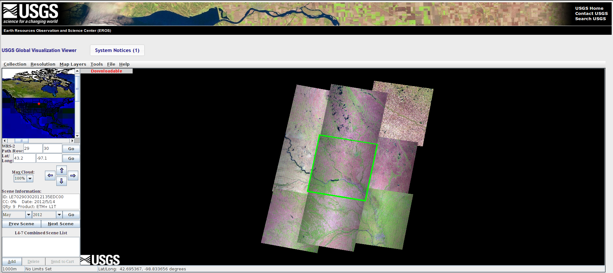

The first step is to get hold of all available data. In principle, we will use the GLOVIS website from the USGS to list all available acquisitions from both Landsat 5 TM and Landsat 7 ETM, order and download the data.
It is useful if you create an account on this website (click on Register for the typical website account setting up).
The region of interest extends the following area:
This area is covered by multiple TM scenes, which will probably make it easier to locate acquisitions. The path and row can be indicated on the WRS-2 Path/Row entry box just below the world map on the left hand site of the GLOVIS window:
Before selecting the scene, it’s useful to set the Max Cloud option to 100%. This setting allows for limiting results that may be too cloudy, but this is irrelevant for this project, so set it to 100% (effectively ignore it). Enter the path/row combinations on the box and press Go. The big display window on the right hand side will show some recent acquisitions over the area of interest, with the central scene bordered in yellow. In the bottom left of the screen, you can read some scene information.
The process is then fairly straightforward. For each path & row:
Note
It might be worthwile to do this by year, bagging all the scenes in a given year. That way, if there’s any problem or crash, only one year needs to be re-entered.
Once the the added scenes have been set to the cart, a new window will open. There will be a prompt to either use your GLOVIS account, or some way of inputting your email address. This is required, as most of the data is not directly accessible, but needs to be staged for downloading. This process can take a couple of days to clear, but most often only takes a few hours. You will get email alerts directing you to the files to download when they are ready.
Once you get the confirmation emails, you can proceed to download the files. It is recommended that you download them using a command-line tool such as wget or curl. These are installed in the machines in the UCL system, so you would just change directory to your work space (cd ~/Data/, for example), and issue the commands required there. This will download the relevant files in that directory.